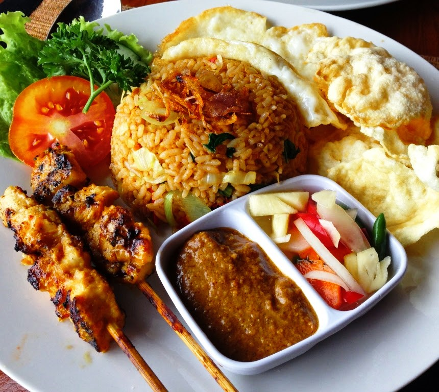

Seleraku
For Authentic Indonesian Cuisine.
ABOUT US
Seleraku brings you indonesia's most vibrant and colorful cuisins,from jakarta's local modest shops to street-side snacks and top dollar plates. Here you can find all of your favorite indonesian dishes like nasi goreng ,sate ,bakso and our freshly home-baked sweets like martabak-manis,kue putu ayu and more. All dishes are prepared by local indonesian Chefs using only specially chosen ingredients,including imported herbs ,spices and sauces. The restaurant is decorated with traditional indonesian theme and provides a friendly and relaxed environment allowing guests to feel at home while dining.
